MedRT-SFSeg
80.4%
Dice, Kvasir → ClinicDB
+7.7 over non-adapted baseline
80.8%
Dice, ClinicDB → Kvasir
+9.8 over non-adapted baseline
62+ FPS
End-to-end on RTX 4060 Ti
640 × 640, batch 1, FP32
10.37M
Deployment parameters
No overhead added by adaptation
Source-free domain adaptation (SFDA) is critical for medical image segmentation as it enables model adaptation to unlabeled target domains without compromising source data privacy. However, its effectiveness is often hindered by confirmation bias, where self-training models struggle with small polyps, foreground hallucinations, and imprecise contours.
We propose MedRT-SFSeg, a real-time SFDA framework based on a dual-head O2O/O2M YOLO segmentation architecture. We introduce Mask-DHF to fuse precision- and recall-oriented predictions into stable pseudo-instances, and DURR, which exploits pixel-level disagreement for signed boundary routing to expand or shrink masks while recovering missed instances and suppressing hallucinations. Seg-MARD further regularizes feature representations through mask-guided region-stratified sampling.
Experiments on bidirectional adaptation between Kvasir-SEG and CVC-ClinicDB show that MedRT-SFSeg achieves 80.43%/80.77% Dice and 5.53/8.44 mm ASD, respectively. It improves the non-adapted baseline by 7.7 and 9.8 Dice points while retaining more than 62 FPS end-to-end. These results suggest that segmentation-aware dual-head fusion can improve pseudo-label quality while preserving real-time inference.
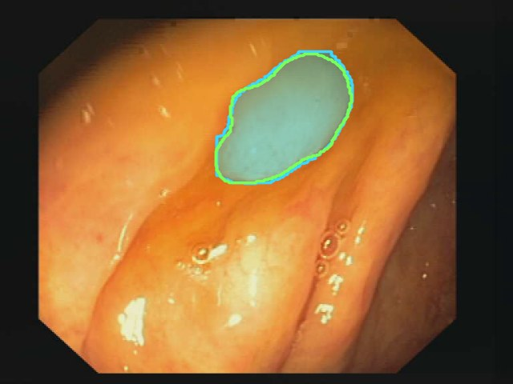
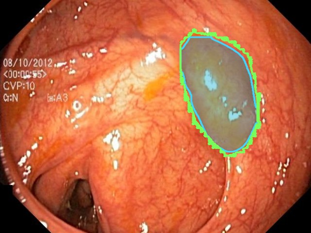
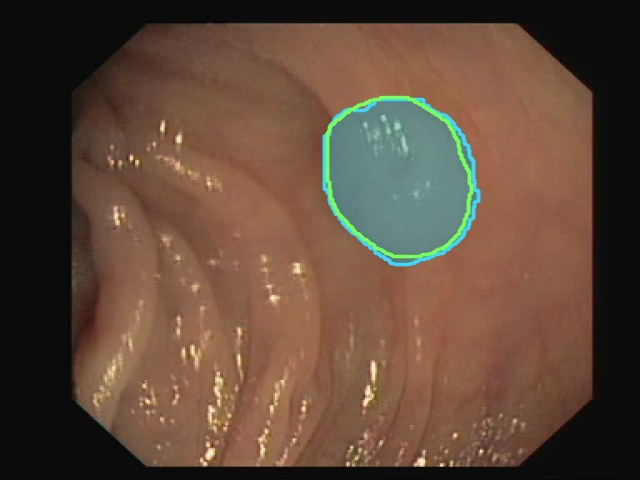
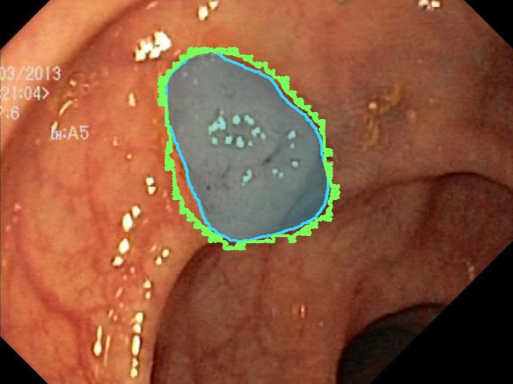
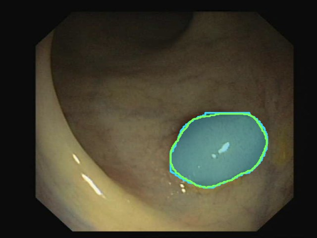
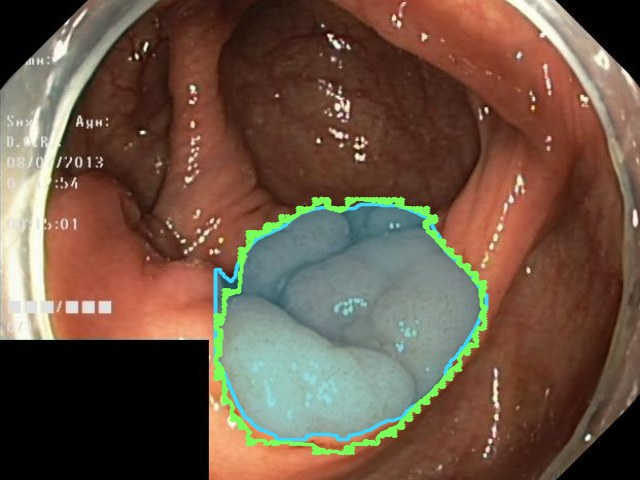
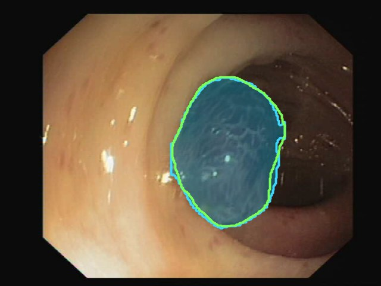
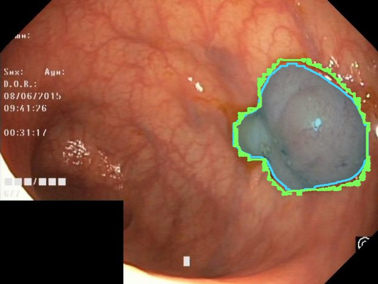
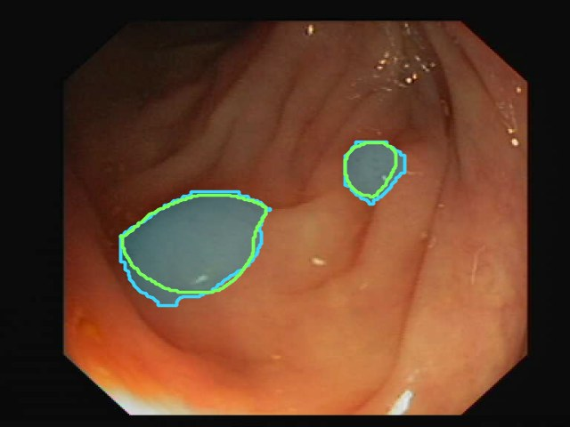
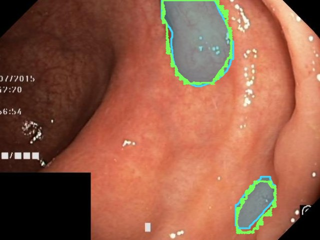
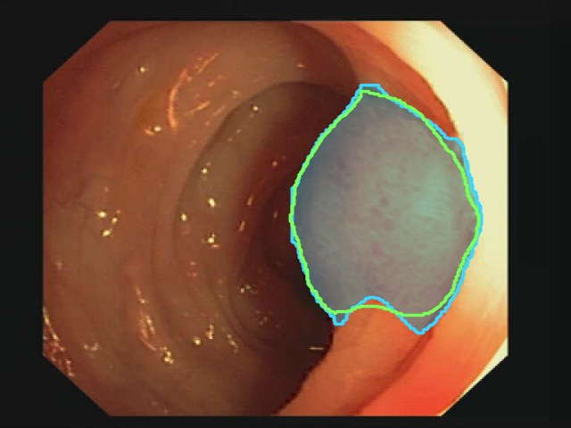
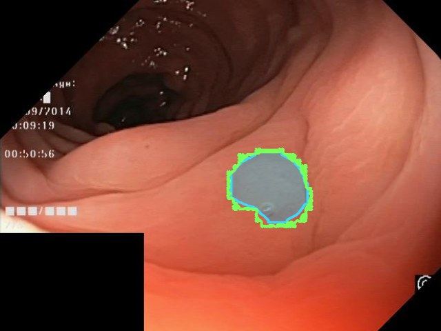
Selected target-domain predictions of the adapted Student on CVC-ClinicDB and Kvasir-SEG. prediction ground-truth contour
Existing uncertainty-based SFDA methods mostly treat uncertainty as a trust decision: unreliable pixels are filtered, down-weighted, or denoised. At an ambiguous boundary, however, the useful question is not only whether a prediction is uncertain but how it should change. An uncertain boundary may mean the mask is too conservative and should expand, or that it has absorbed spurious foreground and should shrink.
YOLO26 exposes two complementary heads: a duplicate-free one-to-one (O2O) head that gives conservative, precision-oriented predictions, and a dense one-to-many (O2M) head that recovers missed instances. MedRT-SFSeg starts from a source-trained YOLO26-S-Seg model, re-estimates BatchNorm statistics on unlabeled target images (AdaBN), and then runs Mean-Teacher self-training in which three training-only components convert dual-head disagreement into segmentation-specific supervision.
Pseudo-instances
Extends dual-head fusion from boxes to masks. O2O predictions act as conservative anchors, matched O2M predictions serve as witnesses, and low-overlap O2M predictions become coverage candidates for missed instances. Each prediction receives an instance-level reliability r = √(s · qstab), combining confidence with mask stability across two probability thresholds.
Directional routing
Dual-Head Uncertainty Reliability Routing keeps the sign of the disagreement. Inside a two-sided boundary band, positive disagreement asks the Student to expand and negative disagreement asks it to shrink. Reliable O2M predictions additionally rescue instances the O2O head misses, and foreground is suppressed where both heads agree there is none.
Feature regularization
Adapts representation diversification to segmentation by replacing box-based sampling with pseudo-mask regions. At P3, P4 and P5, features are sampled from foreground, hard background (inside the box, outside the mask) and easy background, then regularized with variance and covariance losses.
Δi(x) = rim Pim(x) − rio Pio(x)
Signed, reliability-weighted disagreement between the aggregated O2M evidence Pm and the O2O anchor Po, used where |Δ| ≥ 0.02.
All auxiliary components (the EMA Teacher, Mask-DHF, DURR and Seg-MARD) are discarded after adaptation. Only the adapted Student O2O branch is deployed, so the model keeps the parameter count and latency of the original YOLO26-S-Seg.
We evaluate both source-free adaptation directions between Kvasir-SEG (1,000 images) and CVC-ClinicDB (612 frames) without changing any component of the method between directions. Baseline is the source-only model evaluated on the target domain; Supervised is the target-supervised upper bound. Dice and Average Surface Distance (ASD) are reported as mean ± std across target images.
| Method | Kvasir-SEG → CVC-ClinicDB | CVC-ClinicDB → Kvasir-SEG | ||
|---|---|---|---|---|
| Dice (%) ↑ | ASD (mm) ↓ | Dice (%) ↑ | ASD (mm) ↓ | |
| Baseline | 72.8 ± 33.0 | 5.9 ± 12.5 | 70.9 ± 25.2 | 9.8 ± 18.5 |
| Supervised | 96.0 ± 4.3 | 0.6 ± 0.6 | 90.3 ± 16.6 | 3.7 ± 10.2 |
| ProtoContra | 78.0 ± 12.1 | 0.9 ± 0.6 | 68.9 ± 26.4 | 9.5 ± 15.0 |
| DPL | 67.2 ± 24.0 | 8.0 ± 12.4 | 66.1 ± 33.1 | 7.8 ± 17.7 |
| IAPC | 73.3 ± 29.6 | 4.4 ± 7.9 | 61.2 ± 26.3 | 13.7 ± 13.2 |
| DFG | 19.1 ± 14.7 | 97.5 ± 17.6 | 26.8 ± 18.1 | 87.5 ± 19.5 |
| UPL-SFDA | 67.1 ± 14.6 | 2.2 ± 0.9 | 60.2 ± 31.3 | 11.4 ± 17.2 |
| HEAL | 81.8 ± 22.6 | 4.3 ± 8.2 | 66.5 ± 28.8 | 9.15 ± 11.6 |
| IPLC | 34.8 ± 11.7 | 34.7 ± 22.9 | 45.3 ± 21.2 | 19.2 ± 8.4 |
| SRPL | 33.0 ± 22.7 | 31.4 ± 19.6 | 44.9 ± 26.0 | 18.9 ± 16.9 |
| MedRT-SFSeg (Ours) | 80.4 ± 24.4 | 5.5 ± 10.7 | 80.8 ± 23.3 | 8.4 ± 15.3 |
Best and second-best among source-free methods.
| Configuration | Kvasir-SEG → CVC-ClinicDB | CVC-ClinicDB → Kvasir-SEG | ||||
|---|---|---|---|---|---|---|
| Dice (%) ↑ | IoU (%) ↑ | ASD (mm) ↓ | Dice (%) ↑ | IoU (%) ↑ | ASD (mm) ↓ | |
| Baseline | 72.75 | 65.54 | 5.92 | 70.94 | 63.07 | 9.81 |
| Mask-DHF | 75.83 | 68.17 | 5.78 | 75.04 | 66.92 | 9.25 |
| Mask-DHF + Seg-MARD | 77.89 | 70.02 | 5.62 | 77.59 | 69.21 | 8.84 |
| Mask-DHF + DURR | 79.02 | 71.92 | 5.58 | 79.33 | 71.04 | 8.59 |
| Full MedRT-SFSeg | 80.43 | 72.57 | 5.53 | 80.77 | 72.52 | 8.44 |
Protocol: RTX 4060 Ti, 640 × 640 input, batch size 1, FP32, 100 warm-up and 500 timed iterations, CUDA-synchronized. End-to-end timing excludes disk I/O. A configuration counts as real-time if it sustains at least 30 FPS end-to-end.
| Metric | Kvasir → ClinicDB | ClinicDB → Kvasir |
|---|---|---|
| Full-graph params (M) | 11.434463 | 11.434463 |
| Fused deployment params (M) | 10.365727 | 10.365727 |
| Deployment GMACs | 17.0229 | 17.0229 |
| Deployment GFLOPs | 34.0458 | 34.0458 |
| Checkpoint size (MB) | 22.322 | 22.335 |
| Network mean latency (ms) | 11.807 | 11.492 |
| Network FPS | 84.69 | 87.01 |
| E2E mean latency (ms) | 15.768 | 16.017 |
| E2E p95 latency (ms) | 15.830 | 16.108 |
| E2E FPS | 63.42 | 62.43 |
| Real-time (≥ 30 FPS) | PASS | PASS |
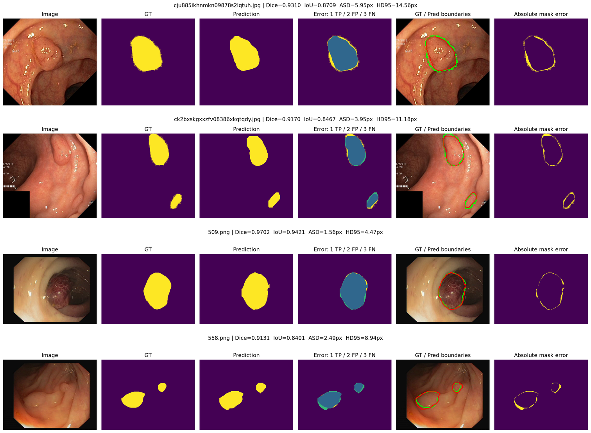
Residual errors are often concentrated around polyp contours rather than arising from gross false detections. This boundary-localized behavior is consistent with the motivation of DURR, which uses signed O2O/O2M disagreement to provide explicit expansion or contraction cues near uncertain boundaries.
MedRT-SFSeg depends on the dual-head O2O/O2M architecture, which restricts direct transfer to conventional single-head backbones. The shared backbone may also produce correlated errors under severe domain shifts, reducing the effectiveness of reliability routing. Future work will extend the framework to broader architectures and more diverse multi-center clinical data.
@misc{nguyen2026medrtsfseg,
author = {Nguyen, Hai-Dang and Le, Nhat-Khoi and Huynh, Huu-Thuan and Tran, Minh-Triet and Le, Trung-Nghia},
title = {Directional Dual-Head Supervision for Real-Time Source-Free Polyp Segmentation},
year = {2026},
note = {Manuscript under review},
}